2025年北京市中考物理试卷 原卷解析
2025年北京市中考物理试卷
参考答案与试题解析
一．选择题（共12小题）
题号 | 1 | 2 | 3 | 4 | 5 | 6 | 7 | 8 | 9 | 10 | 11 |
答案 | A | C | A | C | C | B | D | B | D | C | B |
题号 | 12 |
答案 | D |
二．多选题（共3小题）
一、单项选择题（下列每题均有四个选项，其中只有一个选项符合题意。共24分，每题2分）
1．（2分）下列用电器中，利用电流热效应工作的是（ ）
A．电热水壶B．吸尘器C．电冰箱D．电视机
【答案】A
【分析】导体通电时会产生热量，将电能转化为内能，这种现象叫电流的热效应。
【解答】解：A、电热水壶是利用电流的热效应来工作的，故A符合题意；
B、吸尘器中的电动机主要把电能转化为机械能，故B不符合题意；
C、电冰箱是一种制冷电器，不是利用电流的热效应，故C不符合题意；
D、电视机主要把电能转化为声能和光能，故D不符合题意。
故选：A。
2．（2分）如图所示实例中，为了增大摩擦的是（ ）
A．轴承中装有滚珠B．给车轴加润滑油
C．
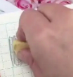
用力压住橡皮擦字D．轮滑鞋装有滚轮【答案】C
【分析】滑动摩擦力与压力、接触面的粗糙程度有关，据此分析。
【解答】解：A、轴承中装有滚珠，将滑动摩擦改为滚动摩擦，减小摩擦，故A不符合题意；
B、给车轴加润滑油，压力一定时，减小接触面的粗糙程度，减小摩擦，故B不符合题意；
C、用力压住橡皮擦字，接触面粗糙程度一定时，增大压力增大摩擦，故C符合题意；
D、轮滑鞋装有滚轮，将滑动摩擦改为滚动摩擦，减小摩擦，故D不符合题意。
故选：C。
3．（2分）如图所示，游客在行驶的游船上欣赏京城水系美景。下列说法正确的是（ ）
A．以桥为参照物，游船是运动的
B．以河岸为参照物，桥是运动的
C．以树为参照物，游船是静止的
D．以游船为参照物，河岸是静止的
【答案】A
【分析】在研究物体运动与静止时，要选择参照的标准，即参照物，物体的位置相对于参照物发生变化，则运动，不发生变化，则静止。
【解答】解：A、以桥为参照物，游船与桥之间发生了位置变化，所以游船是运动的，故A正确；
B、以河岸为参照物，桥与河岸之间没有位置的变化，所以桥是静止的，故B错误；
C、以树为参照物，游船与树之间发生了位置变化，所以游船是运动的，故C错误；
D、以游船为参照物，河岸与游船之间有位置的变化，所以河岸是运动的，故D错误。
故选：A。
4．（2分）如图所示的光现象，由于光的折射形成的是（ ）
A．杯子形成的影子
B．月亮在水中形成的像
C．放大镜把字放大
D．人在平面镜中形成的像
【答案】C
【分析】（1）光在同种、均匀、透明介质中沿直线传播，产生的现象有小孔成像、激光准直、影子的形成、日食和月食等；
（2）光线传播到两种介质的表面上时会发生光的反射现象，例如水面上出现岸上物体的倒影、平面镜成像、玻璃等光滑物体反光都是光的反射形成的；
（3）光线在同种不均匀介质中传播或者从一种介质斜射入另一种介质时，就会出现光的折射现象，例如水池底变浅、水中筷子变弯、海市蜃楼等都是光的折射形成的。
【解答】解：A、杯子形成的影子，是光在同一均匀介质中沿直线传播形成的，故A不符合题意；
B、月亮在水中形成的像属于平面镜成像，是光的反射形成的，故B不符合题意；
C、放大镜把字放大是利用凸透镜成虚像，凸透镜成像的实质是光的折射，故C符合题意；
D、人在平面镜中形成的像是光的反射形成的虚像，故D不符合题意。
故选：C。
5．（2分）如图所示，园艺工人在修剪枝条。关于园艺剪的使用，下列说法正确的是（ ）
A．园艺剪对枝条的压力是阻力
B．在图示状态使用时园艺剪是费力杠杆
C．把枝条往园艺剪的轴处靠近是为了省力
D．把枝条往园艺剪的轴处靠近是为了增大阻力臂
【答案】C
【分析】（1）知道杠杆的五要素；
（2）比较动力臂和阻力臂的大小关系，判断杠杆的类型；
（3）利用杠杆的平衡条件，分析实际杠使用的问题。
【解答】解：A、枝条对园艺剪的压力是阻力，故A错误；
B、由题图可知，修枝剪的支点在转轴处，手对修枝剪的作用力为动力，树枝对修枝剪的作用力为阻力，动力臂大于阻力臂，故修枝剪为省力杠杆，故B错误；
CD、把枝条往园艺剪的轴处靠近，是为了减小阻力臂，在阻力和动力臂大小不变时，根据杠杆平衡条件可知，动力减小，可以更省力，故C正确，D错误。
故选：C。
6．（2分）如图所示的是编钟演奏的情境，下列说法正确的是（ ）

A．敲击编钟时发出的声音是空气振动产生的
B．听众听到的编钟声音，是通过空气传播的
C．编钟发出的声音可以在真空中传播
D．用大小不同的力敲击同一只编钟的同一位置，发出声音的音调不同
【答案】B
【分析】（1）声音是由物体的振动产生的；
（2）我们平时听到的声音是通过空气传播的；
（3）声音的传播需要介质，真空不能传声；
（4）响度的大小与物体的振幅有关，振幅越大，响度越大。
【解答】解：A．声音是由物体振动产生的，敲击编钟时发出的声音是由编钟振动产生的，故A错误；
B．听众听到的编钟声音，是通过空气传播进入人耳的，故B正确；
C．声音的传播需要介质，编钟发出的声音不能在真空中传播，故C错误；
D．用大小不同的力敲击同一只编钟的同一位置，发声体的振幅不一样，响度不同，故D错误。
故选：B。
7．（2分）如图所示，课桌和座椅放在水平地面上，下列说法正确的是（ ）

A．课桌的高度约为1.5m
B．螺钉下面放置垫片是为了增大压强
C．课桌受到的支持力与它受到的重力是一对相互作用力
D．座椅受到的重力与地面对它的支持力是一对平衡力
【答案】D
【分析】（1）可以根据中学生的身高估测课桌的高度；
（2）减小压强的方法：在压力一定时，增大受力面积来减小压强；在受力面积一定时，减小压力来减小压强；
（3）相互作用力的条件：大小相等、方向相反、作用在两个物体上，作用在同一条直线上；
（4）二力平衡的条件：大小相等、方向相反、在同一直线上、作用于同一物体上。
【解答】解：A、中学生课桌的高度约为中学生身高的一半，大约为75cm＝0.75m，故A错误；
B、螺钉下面放置垫片，是在压力一定的情况下，通过增大受力面积来减小压强，故B错误；
C、课桌受到的支持力与它受到的重力，受力物体相同，不是一对相互作用力，故C错误；
D、座椅受到的重力与地面对它的支持力，大小相等、方向相反、在同一直线上、作用于同一物体上，是一对平衡力，故D正确。
故选：D。
8．（2分）在青藏铁路工程中，为了保证多年冻土区路基的稳定性，铁路两侧竖立了许多热棒。如图所示，热棒是封闭的中空长棒，下端插在冻土中，上端装有散热片，里面填充低沸点的液态氨作为“制冷剂”。在寒冷的季节，空气温度低于冻土层温度，制冷剂作为热的“搬运工”，通过液态氨与气态氨的相互转化，使冻土层温度降低、厚度增加，这样即使到了暖季热棒不再工作，冻土也不会完全融化，冻土层因温度变化对路基产生的影响变小。关于热棒在工作过程中，下列说法正确的是（ ）

A．液态氨吸收冻土的热量变为气态氨是升华现象
B．气态氨上升到热棒上端放出热量液化为液态氨
C．热棒的作用是把热量从空气中传到冻土中
D．冻土层从热棒吸收热量，厚度增加
【答案】B
【分析】物质由液态变为气态的过程叫汽化，物质由气态变为液态的过程叫液化。汽化过程吸收热量，液化过程放出热量。
当路基温度升高时，液氨吸收热量发生汽化现象，气态氨上升到热棒的上端，通过散热片将热量传导给空气，此时气态氨放出热量发生液化现象，变成了液态氨，又沉入棒底，这样，热棒就相当于一个“制冷机”。
【解答】解：A、液态氨吸收冻土的热量变为气态氨是汽化现象，故A错误；
B、气态氨上升到热棒上端液化为液态氨，此过程中放出热量，故B正确；
C、热棒的作用是把热量从冻土中传到空气中，故C错误；
D、冻土层被热棒吸收热量，厚度增加，故D错误。
故选：B。
9．（2分）如图所示是冰壶场地的示意图，水平冰面粗糙程度相同。某同学用水平推力使冰壶从A点向前运动，到B点时松手，冰壶滑行到C点静止。下列说法正确的是（ ）
A．冰壶从B到C的过程，该同学对冰壶做了功
B．冰壶能够从B运动到C，是由于它受到了惯性作用
C．冰壶从B到C的过程先加速后减速，机械能没有转化为内能
D．冰壶在AB段所受的摩擦力等于在BC段所受的摩擦力
【答案】D
【分析】（1）是否做功需要满足，有力的作用，并且在力的方向上有移动距离；
（2）惯性是物体的属性；
（3）机械能包括动能和势能；动能的大小与质量和速度有关，重力势能大小与质量和高度有关；
（4）影响滑动摩擦力的因素有压力大小和接触面的粗糙程度。
【解答】解：
A.冰壶从B到C的过程中，该同学没有对冰壶施加力，根据做功的两个必要因素，所以该同学对冰壶没有做功，故A错误；
B.冰壶能够从B运动到C，是由于冰壶具有惯性，惯性是物体的一种属性，不是力，不能说“受到惯性作用”，故B错误；
C.冰壶从B到C的过程中，由于受到摩擦力的作用，速度逐渐减小，动能转化为内能，机械能减小，故C错误；
D.冰壶在AB段和BC段，压力大小（等于冰壶重力 ）和接触面的粗糙程度相同，根据摩擦力大小的影响因素，可知冰壶在AB段所受的摩擦力等于在BC段所受的摩擦力，故D正确。
故选：D。
10．（2分）在试管内装些水，用橡胶塞塞住管口，将水加热一段时间，橡胶塞被推出，管口出现大量“白气”，如图所示。下列说法正确的是（ ）

A．水变热的过程，其内能是通过做功的方式改变的
B．橡胶塞被推出的过程中，水的内能全部转化为塞子的机械能
C．水蒸气推出橡胶塞的过程中，水蒸气的内能减小
D．管口出现的“白气”是试管内的水直接汽化形成的
【答案】C
【分析】（1）水变热是通过热传递的方式改变内能的；
（2）（3）水汽化对外做功，内能转化为机械能，内能剑侠，不是全部转化，会有损耗；
（4）白气是小水珠。
【解答】解：
A.水变热是通过热传递的方式（火焰的热量传递给试管和水 ）改变内能，不是做功，故A错误；
B.橡胶塞被推出过程中，水的内能一部分转化为塞子机械能，还有部分内能散失，不是全部转化，故B错误；
C.水蒸气推出橡胶塞时，对塞子做功，自身内能减小，故C正确；
D.“白气”是水蒸气遇冷液化形成的小水滴，不是水的汽化，故D错误。
故选：C。
11．（2分）某同学用如图所示的其中一个电路做实验，电源电压恒定，R1为定值电阻，逐渐改变滑动变阻器R2连入电路中的阻值大小，记录电流表和电压表的示数如表所示。该实验所用的电路是（ ）
I/A | 0.08 | 0.09 | 0.10 | 0.14 | 0.16 | 0.19 |
U/V | 0.82 | 0.90 | 1.05 | 1.44 | 1.65 | 1.94 |
A．
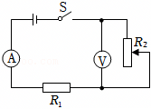
B．
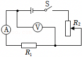
C．
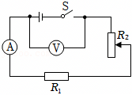
D．
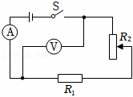
【答案】B
【分析】根据表格数据分析规律，得出电阻是否变化，结合电路图分析。
【解答】解：根据表格数据知，在误差范围内，电压增大几倍，电流也增大几倍，即电流与电压成正比，表示所测部分的电阻保持不变，因而电压表必须接在定值电阻的两端，故B正确，A测的是滑动变阻器的电压，而CD电压表测量的是电源电压，都不符合题意。
故选：B。
12．（2分）某小组设计了水箱自动控制进水装置，如图所示。水箱内的圆柱形金属控制棒用不可伸长的细线悬挂在力传感器下面，并始终浸在水中，通过它对力传感器拉力的大小触发开关，控制水泵自动进水。用水时，水箱内水位降低，当到达最低水位时，力传感器所受拉力等于F1，触发开关，水泵开始持续向水箱注水；当水位到达最高水位时，力传感器所受拉力等于F2，再次触发开关，水泵停止向水箱注水。若进水过程中同时用水，相同时间内进水量大于出水量。已知控制棒的质量为m，水的密度为ρ水。下列说法正确的是（ ）
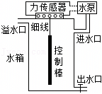
A．控制棒受到的浮力最大时，排开水的体积为
B．控制棒受到的浮力的变化量最大为mg﹣F2
C．力传感器受到的拉力大小在F1与F2之间时，说明水箱正在进水
D．缩短悬挂控制棒的细线，可使水箱中的最高和最低水位均升高
【答案】D
【分析】物体受到了重力、浮力和拉力的作用，根据平衡力的知识分析这三个力的关系，再结合阿基米德原理进行分析。
【解答】A、由题意，控制棒受到了重力、浮力和拉力的作用。当水位达到最高水位时，此时力传感器所受的拉力为F2，方向向下，根据力的作用是相互的，控制棒受到的拉力F2'，大小等于F2，方向向上。此时控制棒排开水的体积为最大，浮力最大。控制棒的重力、浮力和拉力三个力的关系是：F浮+F2'＝G＝mg，可知F浮＝mg﹣F2'＝mg﹣F2，由F浮＝ρ液gV排得：控制棒此时排开水的体积V排
。故A错误。
B、当水位到达最低水位时，力传感器受到的拉力等于F1，方向向下，根据力的作用是相互的，控制棒受到的拉力F1'，大小等于F1，方向向上。此时控制棒排开水的体积为最小，浮力最小。控制棒的重力、浮力和拉力三个力的关系是：F浮min+F1＝G＝mg，得F浮min＝mg﹣F1，
由以上分析知：最高水位时浮力最大，F浮max＝mg﹣F2，
则浮力的最大变化量ΔF浮max＝（mg﹣F2）﹣（mg﹣F1）＝F1﹣F2，故B错误；
C、由题意，最低水位时传感器的拉力为F1，此时控制棒对传感器的拉力最大，水泵启动进水。最高水位时传感器的拉力为F2，此时控制棒对传感器的拉力最小，水泵停止向水箱注水。故注水过程中，拉力逐渐从F1减小到F2。若进水过程中同时用水，相同时间内进水量大于出水量，所以此时水位是上升的，拉力是从F1减小到F2。若水泵停止注水（拉力已达到F2），开始用水，水位下降，则拉力从F2逐渐增大，直到水泵启动（此时拉力为F1）则不管是进水还是出水，拉力确实处于F1和F2之间。故C错误。
D、缩短悬挂控制棒的细线，因F1和F2触发的条件不变，控制棒的重力不变，由F浮＝G﹣F知：则控制棒受到的浮力不变。
根据F浮＝ρ液gV排得：V排
，
若初始时细线的长度为L，控制棒的长度为h，水箱底到力传感器的距离为H。控制棒浸入水中的体积为V排，
设浸入深度为d，控制棒的横截面积为S棒，
则V排＝S棒d，则d
，
因mg、F1、ρ水、S棒均不变，所以d不变；
则水位高度y＝H﹣L﹣h+d，
缩短细线长度L，水位高度y变大。故D正确。
故选：D。
二、多项选择题（下列每题均有四个选项，其中符合题意的选项均多于一个。共6分，每题2分。每题选项全选对的得2分，选对但不全的得1分，有错选的不得分）
（多选）13．（2分）如图所示，一只太阳能草坪节能灯，由太阳能电池板、蓄电池、“6V 1W”的节能灯等组成，太阳能电池板发电并将电能储存在蓄电池中，供节能灯晚间照明；该太阳能电池板接收太阳辐射的面积为0.025m2，其光电转化效率（即发电效率）为20%。若在太阳能电池板接收太阳辐射的有效时间内，1m2太阳能电池板接收太阳辐射的功率为640W。下列说法正确的是（ ）
A．太阳能是可再生能源
B．太阳能电池板给蓄电池充电过程中将化学能转化成电能
C．该灯的太阳能电池板发电功率为16W
D．节能灯正常发光10h消耗的电能为0.01kW•h
【答案】AD
【分析】（1）能够源源不断地获得的能源是可再生能源；
（2）太阳能电池给蓄电池充电时电能转化为化学能；
（3）根据面积与转换效率计算；
（4）根据W＝Pt计算电能。
【解答】解：A、太阳能可以持续获取，短时间能恢复，是可再生能源，故A正确；
B、太阳能电池板把太阳能转化为电能；给蓄电池充电过程中将电能转化成化学能，故B错误；
C、在太阳能电池板接收太阳辐射的有效时间内，1m2太阳能电池板接收太阳辐射的功率为640W，面积为0.025m2，其光电转化效率（即发电效率）为20%，故功率为P＝p 0Sη＝640W/m2×0.025m2×20%＝3.2W。故C错误；
D、节能灯正常发光10h消耗的电能为W＝Pt＝0.001kW×10h＝0.01kW•h，故D正确。
故选：AD。
（多选）14．（2分）如图所示，重600N的工人通过滑轮组用竖直向下的拉力匀速提升货物，表中是他某次工作的相关数据。若三个滑轮重均相等，不计滑轮组的绳重和摩擦，下列说法正确的是（ ）
货物所受重力G/N | 货物被提升高度h/m | 绳端所受拉力F/N | 所用时间t/s |
540 | 3 | 200 | 25 |
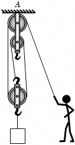
A．工人做功的功率为72W
B．滑轮组对悬挂点A的拉力为920N
C．滑轮组的机械效率为90%
D．若货物离开水平地面之前，工人用100N的力竖直向下拉绳端，则地面对货物的支持力为200N
【答案】ABC
【分析】A、根据P
计算工人做功的功率；
B、先计算动滑轮的重力，根据F＝4F拉+2G定计算滑轮组对悬挂点A的拉力；
C、根据η
计算滑轮组的机械效率；
D、若货物离开水平地面之前，工人用100N的力竖直向下拉绳端，则地面对货物的支持力F支＝G﹣3F拉′﹣G动，据此计算大小。
【解答】解：A、工人做功的功率P
72W，故A正确；
B、由图可知n＝3，不计滑轮组的绳重和摩擦，则绳端的拉力F拉
（G+G动），
所以动滑轮的重力：G动＝3F拉﹣G＝3×200N﹣540N＝60N，
已知三个滑轮重均相等，则每个定滑轮的重力也为60N；
由图知上方为2个定滑轮，则滑轮组对悬挂点A的拉力等于2个定滑轮的总重+4段绳子的拉力，
所以滑轮组对悬挂点A的拉力为：F＝4F拉+2G定＝4×200N+2×60N＝920N，故B正确；
C、滑轮组的机械效率η
100%＝90%，故C正确；
D、若货物离开水平地面之前，工人用100N的力竖直向下拉绳端，则地面对货物的支持力F支＝G+G动﹣3F拉′＝540N+60N﹣3×100N＝300N，故D错误。
故选：ABC。
（多选）15．（2分）图甲所示的是恒温式热线风速仪的结构示意图，将一根细金属丝置于圆柱形通道内，设定其工作温度为t0。使用时接通电路，金属丝升温到t0，风流过通道时，会带走部分热量，风速仪通过改变流过金属丝的电流维持金属丝的温度不变，此时单位时间内金属丝产生的热量与风带走的热量相等，风速仪通过测量金属丝两端的电压、风进入通道时风的温度，从而实现对风速的测量。已知风速越大、金属丝和风的温度差越大，单位时间内风带走的热量越多；当风速一定时，单位时间内风带走的热量与金属丝和风的温度差成正比。金属丝电阻R随温度t变化的关系如图乙所示。假设空气密度始终不变，下列说法正确的是（ ）
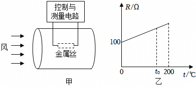
A．金属丝升温到t0的过程中阻值不变
B．流入风速仪的风的温度不变时，所测风速增大，金属丝两端的电压增大
C．若风速仪测得的电压越大，流入风速仪的风的温度越高，则风速越大
D．若t0＝150℃，风速仪测得温度为0℃与30℃的风速相同，则金属丝两端的电压之比为2：
【答案】BC
【分析】根据恒温式热线风速仪的工作原理，金属丝温度与风速之间的关系，以及金属丝电阻随温度变化的规律，判断选项。
【解答】解：A、由图乙可知，金属丝升温到t0的过程中阻值变大，故A错误；
B、流入风速仪的风的温度不变时，所测风速增大，风带走的热量增多，为了维持温度不变，需要增大流过金属丝的电流，由于温度不变，金属丝电阻不变，由U＝IR可知金属丝两端的电压增大，故B正确；
C、风速仪测得的电压越大，相等时间内产生的热量越多，流入风速仪的风的温度越高，金属丝和风的温度差变小，带走的热量少了，为了维持恒温，需要调大风速，故C正确；
D、风速一定时，单位时间内风带走的热量与金属丝和风的温度差成正比，风速仪测得温度为0℃，温度差为Δt1＝150℃﹣0℃＝150℃
风速仪测得温度为30℃，温度差为Δt2＝150℃﹣30℃＝120℃
风带走的热量
代入数据得
恒温时，单位时间内金属丝产生的热量与风带走的热量相等，所以
＝
由以上分析可知
代入数据得
，故D错误；
故选：BC。
三、实验探究题（共28分，16、22题各2分，17题6分，18、19、20题各4分，21、23题各3分）
16．（2分）如图所示，用毛皮摩擦过的橡胶棒接触验电器的金属球时，验电器的金属箔张开是由于 同种 电荷相互排斥。
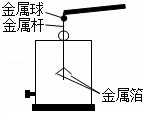
【答案】同种。
【分析】验电器是检验物体是否带电的仪器，其制作原理是：同种电荷相互排斥。
【解答】解：用毛皮摩擦过的橡胶棒带负电，用它去接触验电器的金属球时，电子发生转移，验电器也带上负电，即验电器的金属球和两个金属箔片上都带上了负电，由于同种电荷相互排斥，故其两个金属箔片会张开。
故答案为：同种。
17．（6分）（1）探究水在沸腾前后温度变化特点的实验时，当水温为89℃时开始计时，经5min水沸腾，再加热一段时间。利用记录的数据绘制出水的温度随时间变化的关系图线，如图甲所示。从图像可知，水在沸腾前，吸收热量，温度 升高 ；水在沸腾后，吸收热量，温度 不变 。
（2）如图乙所示，两个相同瓶子的瓶口相对，之间用玻璃板隔开，上面的瓶中装有空气，下面的瓶中装有密度比空气大的红棕色二氧化氮气体。抽掉玻璃板后，两瓶内的气体逐渐混合，颜色变得均匀，这一扩散现象说明 分子在永不停息地做无规则运动 。
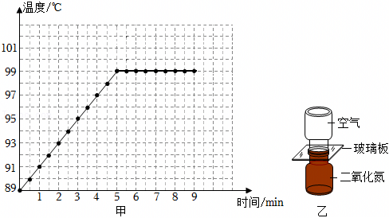
【答案】（1）升高；不变；（2）分子在永不停息地做无规则运动。
【分析】（1）水在沸腾前，吸收热量，温度持续升高；水在沸腾后，吸收热量，温度保持不变；
（2）由图乙可知，抽掉玻璃板后，两瓶内的气体逐渐混合，颜色变得均匀，说明分子在永不停息地做无规则运动。
【解答】解：（1）由图甲可知，水在沸腾前，吸收热量，温度持续升高；
达到一定温度后，温度不再上升，说明达到了沸点，且保持不变，即水在沸腾后，吸收热量，温度保持不变；
（2）由图乙可知，抽掉玻璃板后，两瓶内的气体逐渐混合，颜色变得均匀，由于空气的密度比二氧化氮的目的小，故不是由于重力造成的，说明分子在永不停息地做无规则运动。
故答案为：（1）升高；不变；（2）分子在永不停息地做无规则运动。
18．（4分）某同学用如图所示的装置进行实验，使金属棒ab向左做切割磁感线运动，灵敏电流计指针向右偏转，说明回路中有电流产生，这是 电磁感应 现象。灵敏电流计指针偏转的方向可以反映电路中的电流方向，若要改变上述灵敏电流计指针偏转的方向，可进行的操作是 将磁体的N、S对调，仍使金属棒ab向左做切割磁感线运动（或保持磁体的N、S不变，使金属棒ab向右做切割磁感线运动） 。
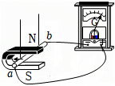
【答案】电磁感应；将磁体的N、S对调，仍使金属棒ab向左做切割磁感线运动（或保持磁体的N、S不变，使金属棒ab向右做切割磁感线运动）。
【分析】闭合电路的一部分导体在磁场中做切割磁感线运动时，电路中会产生电流，这种现象叫电磁感应现象；
感应电流的方向与磁场方向和导体切割磁感线运动的方向有关，当磁场方向或导体切割磁感线运动的方向改变时，感应电流的方向发生改变；当磁场方向和导体切割磁感线运动的方向同时改变时，感应电流的方向不变，由此可知要改变上述灵敏电流计指针偏转方向的操作。
【解答】解：由图可知，闭合电路中，金属棒ab向左做切割磁感线运动，灵敏电流计指针向右偏转，说明回路中有电流产生，这是电磁感应现象；
感应电流的方向与磁场方向和导体切割磁感线运动的方向有关，当磁场方向或导体切割磁感线运动的方向改变时，感应电流的方向发生改变；当磁场方向和导体切割磁感线运动的方向同时改变时，感应电流的方向不变，由此可知，要改变上述灵敏电流计指针偏转方向，即改变电流的方向，可进行的操作是：将磁体的N、S对调，仍使金属棒ab向左做切割磁感线运动（或保持磁体的N、S不变，使金属棒ab向右做切割磁感线运动）。
故答案为：电磁感应；将磁体的N、S对调，仍使金属棒ab向左做切割磁感线运动（或保持磁体的N、S不变，使金属棒ab向右做切割磁感线运动）。
19．（4分）某同学进行了如下实验：
（1）将两个凸透镜分别固定在光具座上，并用一束平行主光轴的光分别射向两个凸透镜，调节光屏的位置，直至在各自光屏上形成了一个最小的亮斑，如图所示。由此可知凸透镜 M （选填“M”或“N”）对光的会聚作用更强。
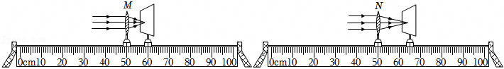
（2）该同学继续利用上述器材及一个发光体、刻度尺探究凸透镜成实像时，像的高度与焦距是否有关。实验中需要选用凸透镜 M和N （选填“M和N”或“M或N”），将发光体放在距凸透镜 相同 （选填“相同”或“不同”）距离处，用光屏接收像，若 像的高度不同 ，则说明像的高度与焦距有关。
【答案】（1）M；（2）M和N；相同；像的高度不同。
【分析】（1）凸透镜的焦距越小，折光能力越强，据此分析；
（2）探究凸透镜成实像时，像的高度与焦距是否有关，需要控制距离不变，改变凸透镜的焦距，据此分析。
【解答】解：（1）凸透镜的焦距越小，折光能力越强。由图可知，M透镜的焦距小于N透镜的焦距，故M透镜对光的折光能力更强；
（2）探究凸透镜成实像时，像的高度与焦距是否有关，需要控制距离不变，改变凸透镜的焦距，故需要M和N透镜；
发光体距离凸透镜的距离保持不变，先后换用M与N透镜，观察光屏上像的高度，如果高度不同，说明像的高度与焦距有关。
故答案为：（1）M；（2）M和N；相同；像的高度不同。
20．（4分）某同学利用干电池、数字电流表A、数字电压表V、多个阻值不同且已知的定值电阻、滑动变阻器、开关及导线，探究通过导体的电流与导体的电阻的关系。
（1）请画出实验电路图。
（2）该同学分析如表实验数据，发现 电流与电阻乘积为一定值 ，由此可得实验结论： 导体两端电压一定时，通过导体的电流跟导体的电阻成反比 。
电阻R/Ω | 5 | 10 | 15 | 20 | 25 | 40 |
电流I/A | 0.40 | 0.20 | 0.14 | 0.10 | 0.08 | 0.05 |
【答案】（1）见解答图；（2）电流与电阻乘积为一定值；导体两端电压一定时，通过导体的电流跟导体的电阻成反比。
【分析】（1）用导线把电源、开关、用电器、电阻、电流表串联在一起，电压表与电阻并联；
（2）根据表格数据分析得出结论。
【解答】解：（1）用导线把电源、开关、用电器、电阻、电流表串联在一起，电压表与电阻并联，电路图如下：
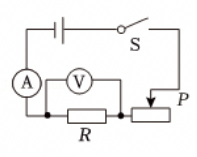
（2）由表格数据可知，电流与电阻的乘积为U＝IR＝0.4A×5Ω＝...＝0.05A×40Ω＝2V，电流与电阻的乘积为一定值，故由表格数据可以得出结论：导体两端电压一定时，通过导体的电流跟导体的电阻成反比。
故答案为：（1）见解答图；（2）电流与电阻乘积为一定值；导体两端电压一定时，通过导体的电流跟导体的电阻成反比。
21．（3分）某同学利用滑动变阻器RP、电阻箱R、电压表、电压恒定的电源、开关等器材设计了测量电阻Rx的实验电路，如图所示。
（1）请补充主要实验步骤：
①按电路图连接电路，将滑动变阻器的阻值调到最大端。
②闭合S1， 将s2拨到2的位置，调节滑动变阻器的滑片到适当位置 ，记录电压表的示数U。
③闭合S1， 将s2拨到1的位置，保持滑动变阻器的滑片位置不变，调节电阻箱R的阻值 ，使电压表的示数仍为U。
④记录电阻箱的阻值R0。
（2）待测电阻的阻值Rx＝ R0 。（用测量量表示）
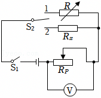
【答案】（1）②将s2拨到2的位置，调节滑动变阻器的滑片到适当位置；
③将s2拨到1的位置，保持滑动变阻器的滑片位置不变，调节电阻箱R的阻值；
（2）R0。
【分析】用电压表测出待测电阻两端电压，再将开关与电阻箱连接并调节电阻箱的阻值使电压表的示数不变，根据串联电路特点和欧姆定律可知待测电阻的阻值与电阻箱的阻值相等。
【解答】解：（1）①按电路图连接电路，将滑动变阻器的阻值调到最大端。
②只闭合开关S1，将s2拨到2的位置，此时RP与Rx串联，调节滑动变阻器的滑片到适当位置，记录电压表的示数U；
③闭合S1，将s2拨到1的位置，此时RP与R串联，保持滑动变阻器的滑片位置不变，调节电阻箱R的阻值，使电压表的示数仍为U；
④记录此时电阻箱的阻值R0。
（2）待测电阻的阻值Rx＝R0。
故答案为：（1）②将s2拨到2的位置，调节滑动变阻器的滑片到适当位置；
③将s2拨到1的位置，保持滑动变阻器的滑片位置不变，调节电阻箱R的阻值；
（2）R0。
22．（2分）某同学利用一个圆柱形容器、一个梨、记号笔、刻度尺和适量的水测量酱油的密度，测量过程如图所示，图中h1、h2、h3、h4分别是梨放入水、酱油前后液面到容器底的距离。已知水的密度为ρ水，则待测酱油的密度ρ酱油＝
。（用已知量和测量量表示）
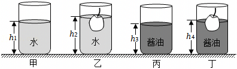
【答案】
。
【分析】（1）根据甲、乙两图，利用阿基米德原理求出梨在水中受到的浮力，根据物体的浮沉条件可知梨的重力；
（2）由图丙、丁表示出梨在酱油中受到的浮力，根据物体的浮沉条件可知梨在水中和酱油中受到的浮力相等，据此解出酱油的密度。
【解答】解：假设容器的底面积为S，由图甲、乙可知，梨在水中受到的浮力：F浮＝ρ水gV排＝ρ水gS（h2﹣h1），
由图乙可知，梨漂浮在水面，根据物体的浮沉条件可知，梨的重力G＝F浮＝ρ水gS（h2﹣h1），
假设酱油的密度为ρ酱油，由图丙、丁可知，梨在酱油中受到的浮力：F′浮＝ρ水gV′排＝ρ酱油gS（h4﹣h3），
由图丁可知，梨漂浮在酱油中，根据物体的浮沉条件可知，F′浮＝G，
即ρ酱油gS（h4﹣h3）＝ρ水gS（h2﹣h1），
解得：酱油的密度：ρ酱油
。
故答案为：
。
23．（3分）取一段胶皮管，左端接一个漏斗，右端接一个尖嘴的小管，向漏斗中装水，使左侧管中液面高于小管口，便形成了一个人工喷泉，如图所示。请从力的角度推理说明右侧管口水喷出的原因。
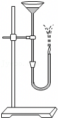
【答案】见解析。
【分析】液体内部向各个方向都有压强；液体的压强随深度增加而增大；在同一深度处液体向各个方向的压强相等。
【解答】解：该人工喷泉可视为一个连通器，根据连通器原理，当连通器内装有同种液体且液体静止时，各部分液面应保持相平。由于左侧管中液面高于小管口，为了使液面达到相平，水会在重力作用下流动。
同时，根据液体压强公式p ＝ρgh，左侧液面较高，右侧小管口处液体受到左侧较高液柱产生的压强作用，使得水有向右流动的趋势。
水从左侧向右侧尖嘴小管流动过程中，根据伯努利原理，流体在流速大的地方压强小，在流速小的地方压强大。尖嘴小管的横截面积较小，水在通过时流速会增大，压强减小，而外界大气压不变，在大气压和液体内部压强的共同作用下，水就会从右侧管口中喷出。
四、科普阅读题（共4分）
24．（4分）请阅读《地月空间的精准量尺——激光测距》并回答问题。
地月空间的精准量尺一一激光测距
2025年4月，在浩瀚宇宙中的地月空间，一场跨越35万公里的“光影对话”悄然上演，天都一号通导技术试验星，成功完成全球首次白天强光干扰条件下的地月空间激光测距技术试验，标志着我国在深空轨道精密测量领域取得技术新突破。
地月空间是指从地球低轨道延伸至距地球约200万公里的空间范围，是人类探索的一个重要方向，作为人类基于现有科技水平可望而又可即的空间，是我们理解宇宙、试验新技术、驶向星辰大海的“演习场”。
如图所示为激光测距试验示意图，天都一号搭载角反射器在绕月轨道上运动，地面测控站提供轨道预报数据，地面激光站发出激光，激光经距地约3.5×108m的角反射器反射后“原路”返回，激光站接收到反射回波信号，就可以得到此时天都一号到地面的精准距离。由于地月空间距离极大、天都一号卫星在绕月轨道上运动速度极快，对地月空间卫星进行激光测距相当于万米外瞄准一根头发丝，实施精密跟踪与信号捕获难度极大，此次测距验证了我国深空激光测距技术的成熟度。
地月空间激光测距技术试验的成功，为中国开发利用地月空间奠定了坚实的科技基础，也为未来深空探测任务提供了重要手段，将有力支撑国际月球科研站等后续重大工程任务的论证与实施。
请根据上述材料，回答下列问题：
（1）天都一号通导技术试验星成功完成全球首次 白天强光干扰条件下 的地月空间激光测距技术试验。
（2）在激光测距试验中，从激光站发出激光，经天都一号上的角反射器反射，到激光站接收到回波信号所用时间约为 2.3 s。（光速取3.0×108m/s，结果保留一位小数）
（3）如图所示，两块平面镜成一定夹角构成角反射器，一束光线射向角反射器，经两次反射就能模拟天都一号上的角反射器效果的是 B 。
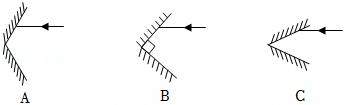
（4）文中介绍的角反射器、激光测距等技术，都是物理知识的具体应用，科学家不断将科学知识应用于技术创新，推动了人类社会的进步。请仿照表中示例，再举出一个物理知识应用于技术方面的实例，补全表格中①②的内容。
物理知识 | 物理知识的技术应用实例 |
光的反射定律 | 角反射器 |
① 光的折射 | ② 望远镜 |
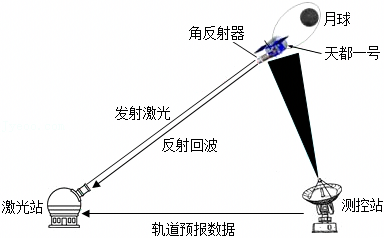
【答案】（1）白天强光干扰条件下；（2）2.3；（3）B；（4）光的折射；望远镜。
【分析】（1）根据题目的材料选择合适的答案。
（2）根据光速和速度公式进行计算。
（3）角反射器本质上是两块或三块（立体的）互相垂直的平面镜组成的。
（4）望远镜是利用凸透镜成像，本质上是光的折射现象制成的重要的光学器件。
【解答】解：（1）天都一号通导技术试验星成功完成全球首次白天强光干扰条件下的地月空间激光测距技术试验。
（2）根据速度公式有：
。
（3）角反射器本质上是两块互相垂直的平面镜，可以将任意方向射向角反射器的光平行反射回去。故选：B。
（4）望远镜是利用光的折射现象制成的一种重要的光学器件。
故答案为：（1）白天强光干扰条件下；（2）2.3；（3）B；（4）光的折射；望远镜。
五、计算题（共8分，25、26题各4分）
25．（4分）某家庭厨房中用电器的相关信息如表中所示，它们用如图所示的插线板供电。插线板允许通过的最大电流为10A。已知家庭电路的电压为220V。
（1）求电饭锅正常工作时加热电阻的阻值。
（2）电风扇、电饭锅已在正常工作，在保证插线板安全使用的条件下，还可以再接入一个用电器，求这三个用电器同时正常工作时，通过插线板的总电流。
名称 | 数量 | 额定功率/W |
电饭锅 | 1 | 880 |
电磁炉 | 1 | 1800 |
电风扇 | 1 | 100 |
电饼铛 | 1 | 1000 |
【答案】（1）电饭锅正常工作时加热电阻为55Ω；
（2）这三个用电器同时正常工作时，通过插线板的总电流是9A。
【分析】（1）根据
计算电饭锅正常工作时的电阻。
（2）根据P＝UI计算插线板允许的最大负载功率，再计算接入三个用电器后的总电流。
【解答】解：（1）电饭锅正常工作时加热电阻的阻值为：
；
（2）插线板允许通过的最大负载功率为：P＝UI＝220V×10A＝2200W；
已经接入的电饭锅和电风扇的功率为：P'＝P1+P2＝880W+100W＝980W；
在保证插线板安全使用的条件下，还可以再接入一个用电器的最大功率为：P0＝P﹣P'＝2200W﹣980W＝1220W；
依题意还可以接入一个电饼铛1000W，此时电路中的实际总功率为：P总＝P1+P2+P3＝880W+100W+1000W＝1980W。
干路中的实际总电流为：
。
答：（1）电饭锅正常工作时加热电阻为55Ω；
（2）这三个用电器同时正常工作时，通过插线板的总电流是9A。
26．（4分）图甲所示的载货汽车，其前面为“单轴﹣单轮”（一根轴上有2个车轮），后面为“单轴﹣双轮”（一根轴上有4个车轮），如图乙所示。装货后该货车总质量为16t，每个轮胎与地面的接触面积约为400cm2。实际货车和货物整体的重心到前、后轴的距离一般不相等，常偏向车的后半部，为简化研究问题，假设整体重心C到前、后轴的距离相等，水平地面对货车前面两个车轮的作用力相等，等效作用在A点；水平地面对货车后面四个车轮的作用力均相等，等效作用在B点；因此，货车可看成水平杠杆，如图丙所示，AB距离等于前、后车轴间的距离，C在AB中点。g取10N/kg。
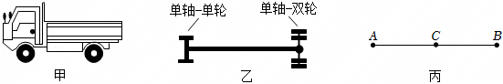
（1）求货车在B点所受的总支持力。
（2）为了保护路面，需要限定车辆对路面的压强大小。只要车辆的任何一个轮胎对路面的压强超过限定值，即视为车辆超限。若某水平路面能承受的最大压强为7.0×105Pa，请通过计算判断该货车是否超限。
【答案】（1）货车在B点所受的总支持力为 80000 N。
（2）该货车超限，因为前轴轮胎对路面的压强超过了7.0×105Pa。
【分析】（1）杠杆平衡条件：F1L1＝F2L2，可根据力臂的大小判断出动力和阻力的关系；
（2）利用压强公式p
可以计算出各轮胎对地压强，从而判断货车是否超限。
【解答】解：（1）货车的总质量m＝16t ＝16000kg。
货车的总重力为：
G＝mg＝16000kg×10 N/kg＝160000N。
设前轴的总支持力为F1，后轴的总支持力为F2。
以A点为支点，后轴的总支持力为F2为动力，货车重力G为阻力，如图所示，其中AB为动力臂L1，AC为阻力臂L2
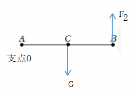
根据平衡条件得，F2L1＝GL2。
又因为C在AB的中点，所以 L1＝ 2L2。
因此，F1
G
80000 N。
B点的总支持力：F2＝80000 N。A点总支持力为F1＝G﹣F2＝160000N﹣80000 N＝80000 N。
（2）每个轮胎与地面的接触面积S＝400 cm2＝400×10−4 m2＝0.04 m2。
前轴2 个轮子，每个轮子对地压力F前
F1
80000 N＝40000N。
故单个轮胎的压强：
p前
1.0×106 Pa。
前轴单个轮胎的压强 1.0×106 Pa＞7.0×105 Pa。因此，货车的前轴轮胎对路面的压强超过了限定值，该货车超限。
答：（1）货车在B点所受的总支持力为 80000 N。（2）该货车超限，因为前轴轮胎对路面的压强超过了7.0×105Pa。